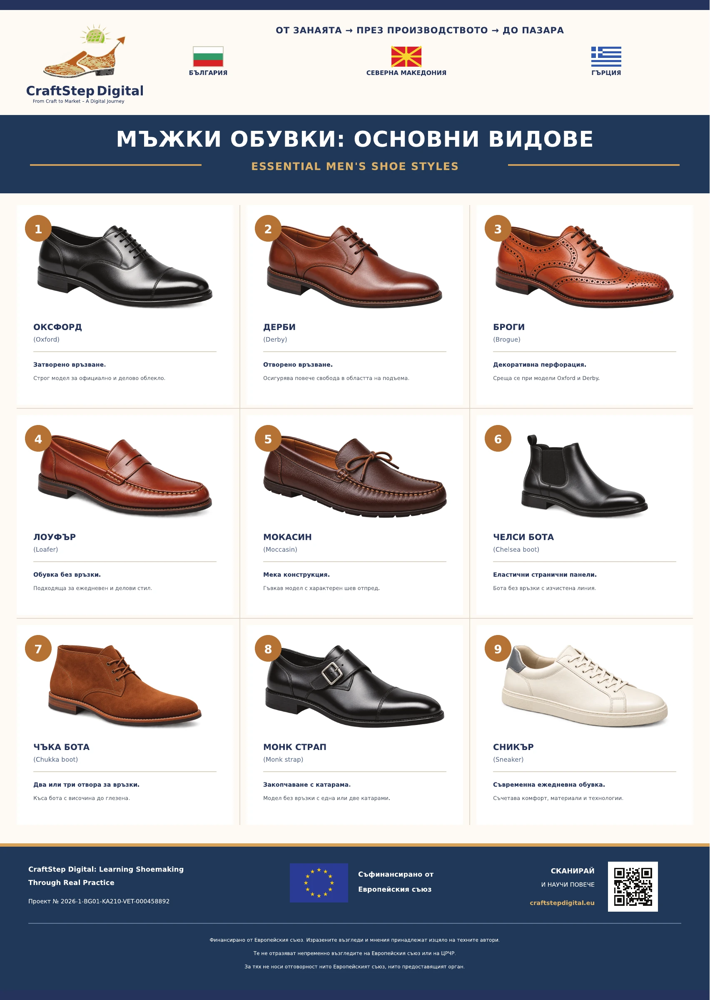

Изображението предстои да бъде каченоУчебно пано 01
Мъжки обувки: основни видове
Паното представя девет разпространени вида мъжки обувки, включително оксфорд, дерби, броги, лоуфър и чълси бота. Снимките показват разликите в силуета, връзването и конструкцията на отделните модели. Кратките описания помагат да разпознаеш обувката и да прецениш за какъв повод или начин на носене е подходяща.